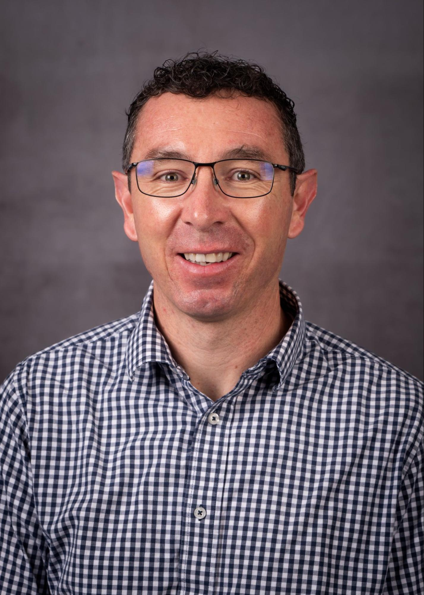
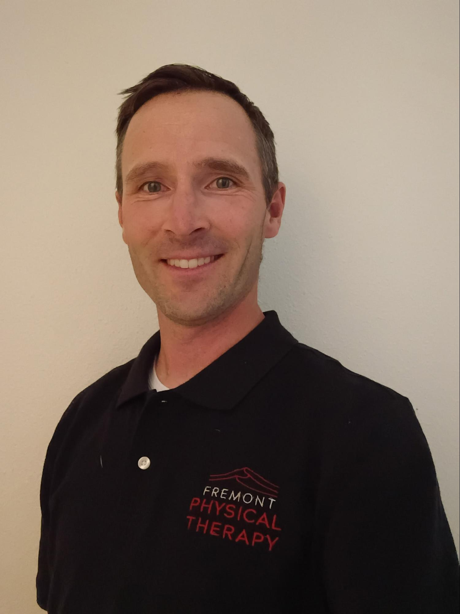
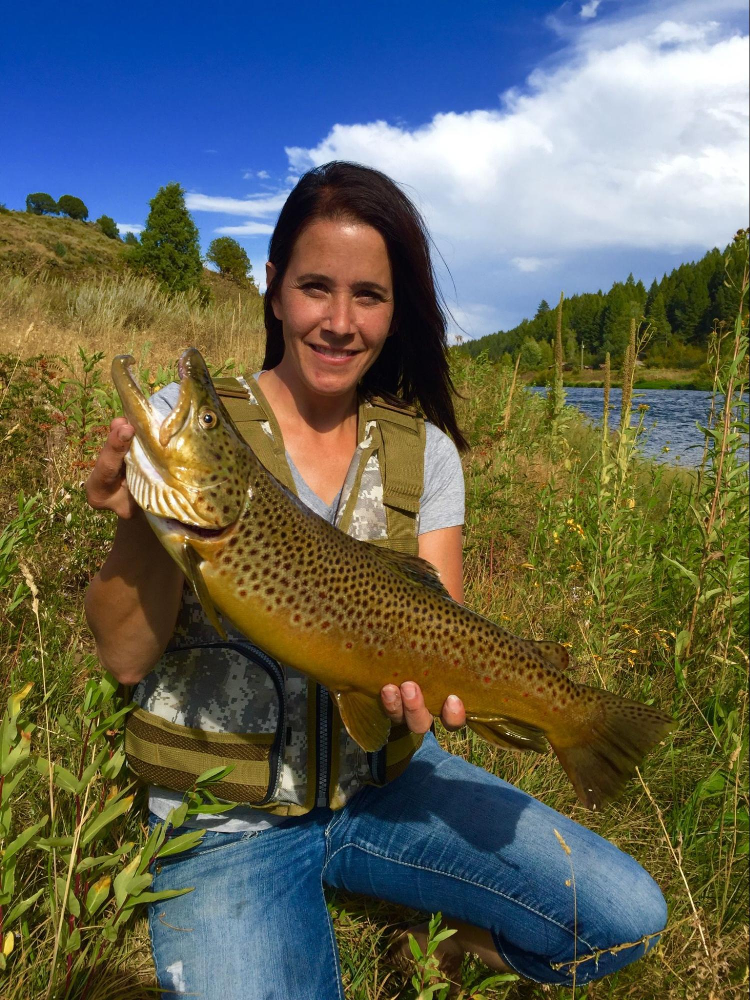
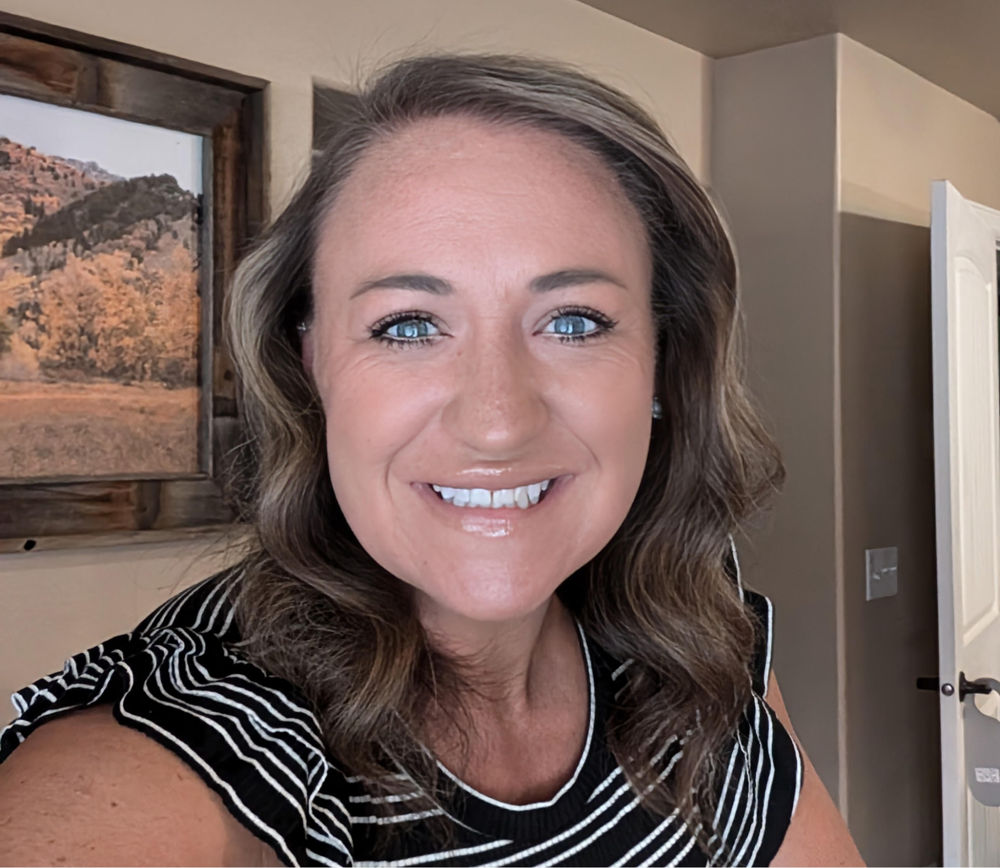
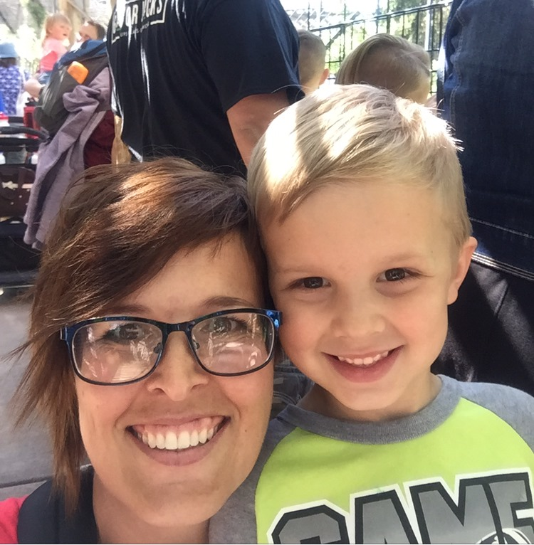
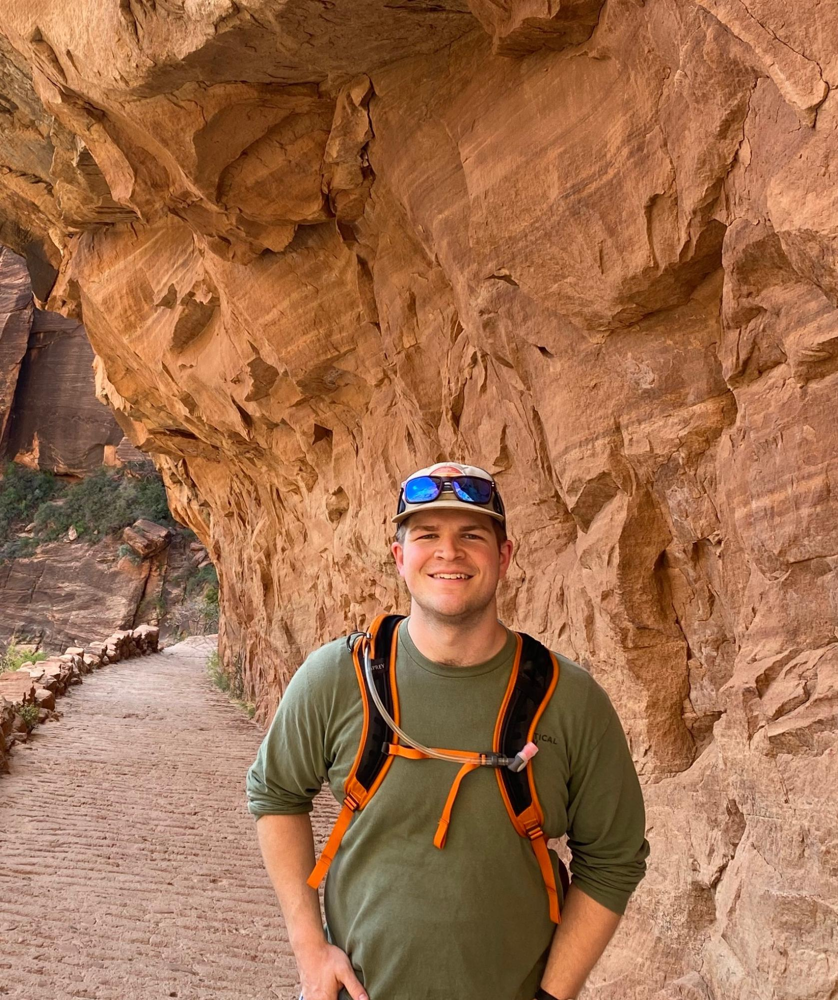
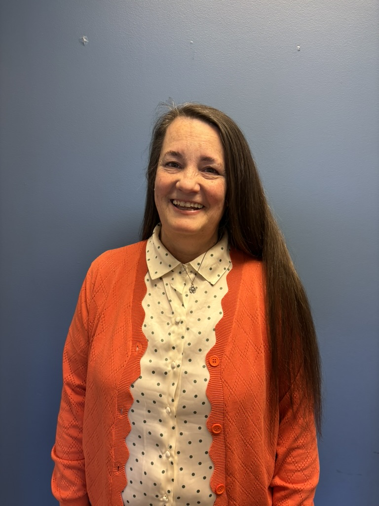
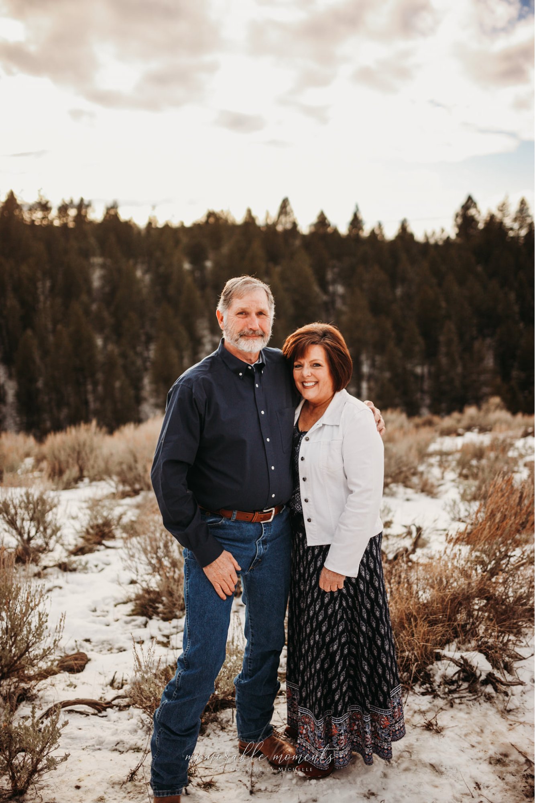

St. Anthony, Idaho · Serving Eastern Idaho
Expert physical therapy rooted in the Fremont County community. The same trusted care — now better than ever.
Fremont Physical Therapy has been part of the St. Anthony community for years. If you've been a patient before, welcome back — your care and your trust are still here. We've simply grown to serve you better.
Knee, hip, shoulder, elbow, and ankle pain — acute or chronic.
ACL tears, sprains, strains, overuse injuries, and athlete return-to-play.
Comprehensive recovery plans following orthopedic surgery.
Disc injuries, sciatica, cervical issues, and postural dysfunction.
Stroke recovery, balance disorders, and nerve injuries.
Pelvic floor therapy, pre/postnatal, and pelvic pain management.
Strength, balance, and mobility for active aging and fall prevention.
Developmental delays, scoliosis, growing pain, and youth sports.
Low-level laser light stimulates cellular repair, reduces inflammation, and accelerates tissue healing — helping you recover faster with less pain.
Low-impact cycling builds strength and endurance during recovery, ideal for post-surgical rehab and restoring range of motion in the knees and hips.
Full gym and cable machine setup for functional training and progressive strengthening — getting you back to full performance, not just pain-free.

BW
MR
BM
CW
JM
TP
SC
DCChoose a date and time that works for you — no phone call required. New and returning patients can book directly through our scheduling system.
Questions about your bill, records, or upcoming appointments? Our team is here to help. Call or email us directly — we're happy to take care of you.
Log In to Portal →Securely pay your balance online via Spry
Access your treatment notes and history
Reschedule or cancel upcoming visits online
Fill out paperwork before your first visit
We partner with PT programs to provide clinical rotations in a high-volume, multi-specialty outpatient setting. Our experienced therapists serve as mentors, giving students hands-on exposure across a wide range of conditions.
Email to ApplyWe're growing and looking for licensed Physical Therapists and PTAs who want to make a real difference in a community they care about. Competitive pay, flexible hours, and a great team culture.
Email Us